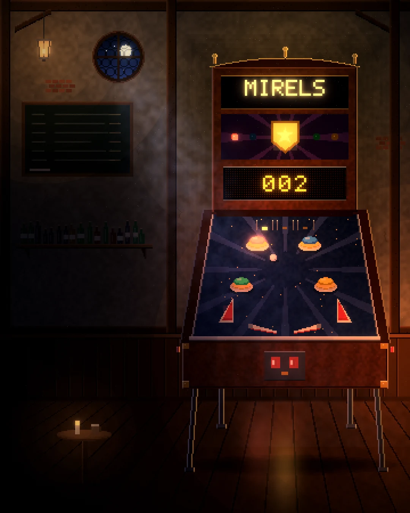
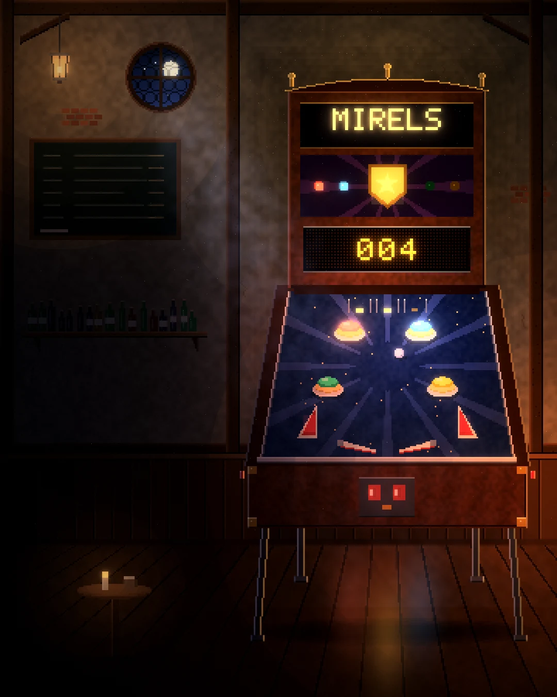
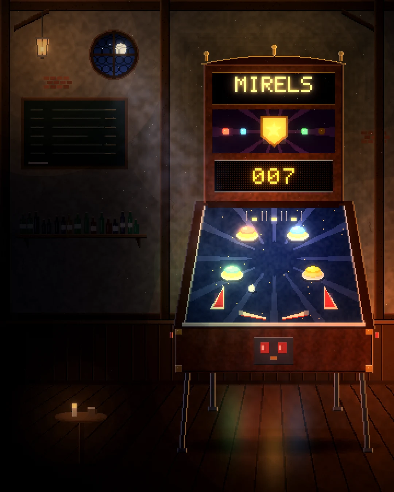
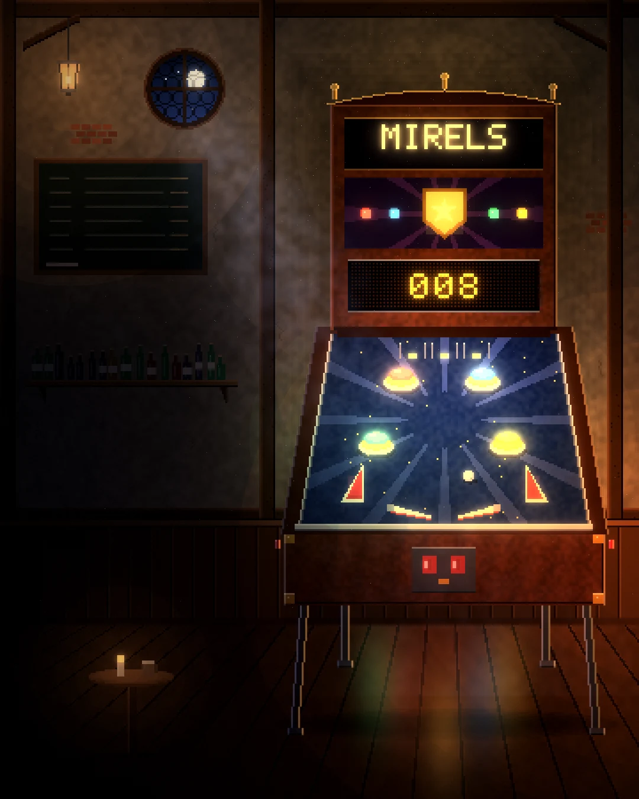
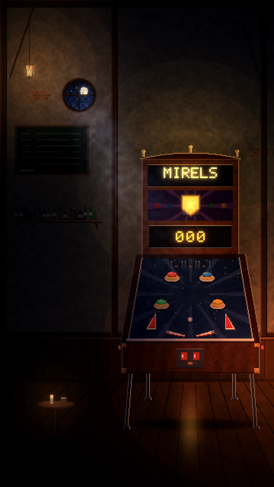
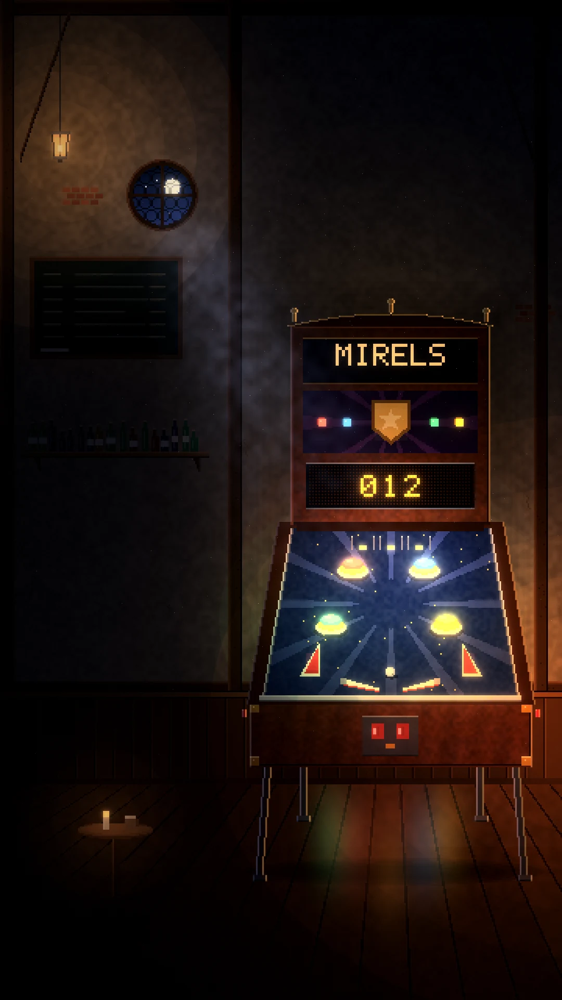
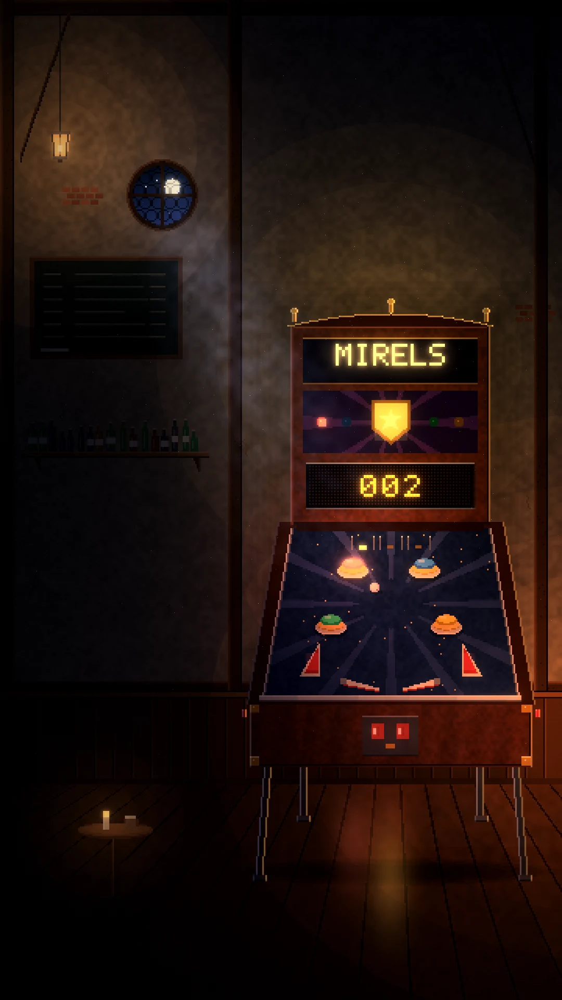

A banca escolheu os dados para pegar dois erros clássicos. Jogue a bola e some ponto por ponto.
O caso
TireoideFêmur distalLítica50% do diâmetroDor leve
Orto Questões
2/8
ENARE R4 Ortopedia 2025 · como caiu
Paciente do sexo feminino, 58 anos de idade, em tratamento devido a um tumor maligno de tireoide, apresenta lesão lítica na extremidade distal de fêmur, acometendo 50% do diâmetro do osso e dor leve. O escore dessa lesão, segundo os critérios de Mirels, para decidir sobre a necessidade de estabilização profilática dessa lesão é:
A6
B7
C8
D9
E10
Escolha a sua ficha e arraste: a bola entra em jogo.

Orto Questões
3/8
+2Localfêmur distal
Bumper 1 · Local
Fêmur distal vale 2, não 3
É membro inferior, como qualquer outro ponto da perna. Só a região peritrocantérica vale 3.
Placar
2+?+?+?=2
Primeira armadilha: contar o fêmur inteiro como 3.

Orto Questões
4/8
+2Tamanho50% do osso
Bumper 2 · Tamanho
Metade do diâmetro vale 2
50% cai na faixa do meio, de 1/3 a 2/3 da largura do osso. Menos de 1/3 vale 1; mais de 2/3 vale 3.
Placar
2+2+?+?=4
Quanto maior a lesão, menos osso sobra.

Orto Questões
5/8
+3Tipolítica
Bumper 3 · Tipo
Lítica vale o máximo: 3
A tireoide, como o rim, costuma dar lesão puramente lítica. Blástica vale 1; mista, 2.
Placar
2+2+3+?=7
A blástica ainda tem osso; a lítica, nenhum.

Orto Questões
6/8
+1Dorleve
Bumper 4 · Dor
Dor leve vale 1. E fecha em 8.
É o ponto que mais se esquece. Moderada vale 2; funcional, 3.
2+2+3+1=8
A6
B7
C8
D9
E10
Orto Questões
7/8
A escala do MIRELS · guarde esta
Quatro bumpers, de 1 a 3 pontos cada
1 ponto
2 pontos
3 pontos
Local
Membro superior
Membro inferior
Peritrocantérico
Tamanho
Menos de 1/3
1/3 a 2/3
Mais de 2/3
Tipo
Blástica
Mista
Lítica
Dor
Leve
Moderada
Funcional
Risco de fratura em 6 meses
7 ou menos5%: dá para irradiar com segurança
815%: considerar a fixação; o julgamento clínico decide
9 ou mais33%: fixação profilática recomendada
Na questão do ENARE
2+2+3+1=8
Bem no limiar: considerar a fixação. E na tireoide, lesão muito vascularizada: o Rockwood recomenda embolização pré-operatória.
Campbell, cap. 27 (Tabela 27.1) e Rockwood, cap. 25, como no comentário da questão no site.
Orto Questões
8/8
Quadro de recordes
O próximo recorde é seu.
Questões das provas oficiais, com o porquê de cada alternativa, comentadas como aula.
Treine grátis
ortoquestoes.com.br

Orto Questões
Insira a ficha
O item diz 9 pontos. Certo ou errado?
R4 Coluna SES-DF 2022
Um paciente de 62 anos de idade é portador de carcinoma metastático, de origem desconhecida, na extremidade proximal do fêmur direito, com aspecto radiográfico lítico e acometimento maior que 2/3. Apresenta ainda dor de forte intensidade, com limitação de suas atividades diárias.
Julgue o item: Segundo o sistema de pontuação para avaliação de fraturas patológicas de Mirels, a pontuação desse paciente é 9, estando indicada a fixação profilática.
Certo ou errado? A resposta sai ao meio-dia.

Orto Questões
TILT!
Errado: a conta dá 12, nunca 9
3+3+3+3=12
Fêmur proximal (peritrocantérico), mais de 2/3, lítica e dor forte que limita a vida (funcional): três pontos em cada. Mesmo contando o local como 2, dá 11.
A conduta estava certa: com 9 ou mais, fixar. Mas num item de certo ou errado, um número errado derruba a frase.

Orto Questões
Fase bônus
O fêmur distal vale quanto?
TEOT 2024
De acordo com a escala de MIRELS para tratamento de fratura iminente em ossos longos, a presença de lesão tumoral na extremidade distal do fêmur recebe
A1
B2
C3
D4
B, 2 pontos. Só o peritrocantérico vale 3; o fêmur distal é membro inferior como qualquer outro.
Orto Questões
Quadro de recordes
O próximo recorde é seu.
A conta completa do MIRELS, ponto por ponto, está no nosso feed.